Projects
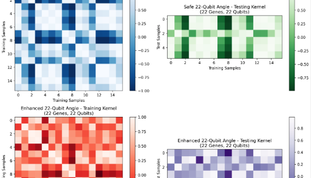
Quantum Machine Learning for Leukemia Genomics
Engineered quantum and classical ML models to classify leukemia subtypes from gene-expression data.
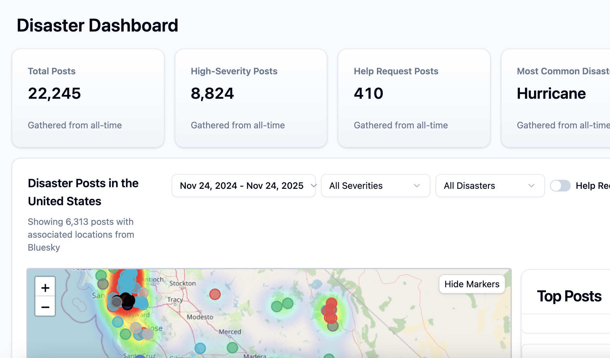
Risk Radar: Tweet Analysis for Disaster Crisis Response
Developed a near real-time crisis detection system using the Bluesky API, benchmarking LLMs to classify 25K+ disaster-related posts.
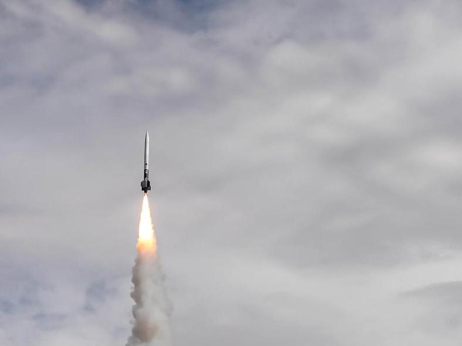
L3 Rocket - Simulation Lead; Spaceport America Cup
Designed & launched a high-powered rocket, leading flight simulations and 6-DOF analyses to optimize performance.
Risk Radar: Tweet Analysis for Disaster Crisis Response
Sep-Dec 2025 | CS 4485 - Senior Design Capstone Project
Advisor: Professor Selim Sarac
Course Overview
This course was intended to complement theory and to provide an in-depth, hands-on experience in all aspects of a software development project. Students worked in teams and were involved in specifying the problem and its solution, designing and analyzing the solution, developing the software architecture, along with implementation and testing plans. The deliverables included reports that documented these steps as well as a final project report, including the challenges they faced, and a user manual of the developed system. Students explored security issues of their project and its potential impact on society. Teams also made presentations and demonstrated their final software. Additionally, this course covered topics related to computer science professions including ethics and professional responsibility, entrepreneurship, leadership, and project management.
Project Overview
Risk Radar is a centralized crisis detection dashboard that transforms real-time social media data from Bluesky into actionable disaster intelligence for emergency responders and the public. The system uses a Large Language Model to automatically classify posts by disaster type, severity, location, and help requests, presenting this information through an interactive geospatial interface.


My Role and Responsibilities
As the Data Science Lead, I was responsible for the complete model development lifecycle:
- Dataset Curation: Assembled and labeled benchmarking datasets, including a balanced 540-post set for initial evaluation and a 1,000-post real-world distribution for validation, sourcing from Hugging Face, Kaggle, and CrisisNLP.
- Model Benchmarking: Evaluated 16 different LLMs across multiple architectural families through systematic testing using Postman automation.
- Model Selection: Led the analysis that identified Qwen3-32B as the optimal model, achieving 94-97% reproducible accuracy with balanced performance and reliability.
- Prompt Engineering: Conducted 25 iterative refinements to optimize classification logic for disaster taxonomy, severity assessment, and location extraction.
- Production Integration: Collaborated with backend team to implement Supabase Edge Functions that interface with the Groq API, incorporating rate limiting and error handling strategies.
- Frontend Data Visualization: Assisted the frontend team in implementing analytics charts and graphs, and translating structured model outputs into intuitive visual representations of disaster distributions and trends for the dashboard.
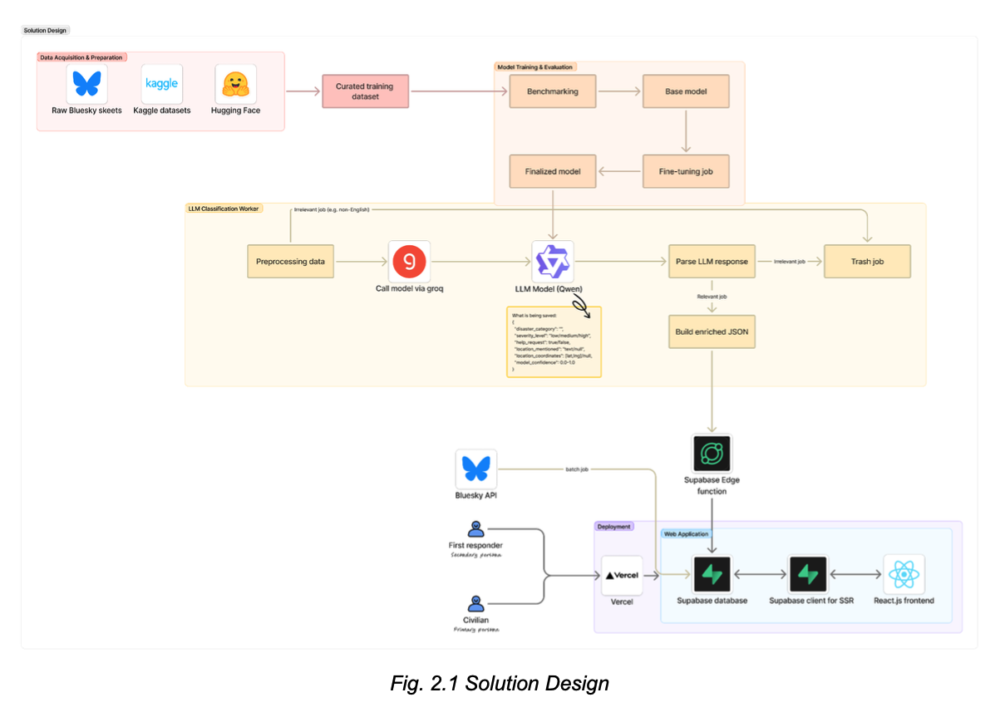
Key Component: Data Pipeline
- Ingests live Bluesky posts via Jetstream firehose with keyword/language filtering.
- Processes posts in scheduled batches using Supabase Edge Functions.
- Classifies content using Qwen3-32B model via Groq API
Key Component: Dashboard Features
- Interactive heatmap with color-coded disaster markers and severity indicators.
- Sortable data table with multi-field filtering (disaster type, severity, date, help requests).
- Real-time statistics and analytics charts showing disaster distribution and trends.
- Resource page with FEMA-sourced preparedness information.
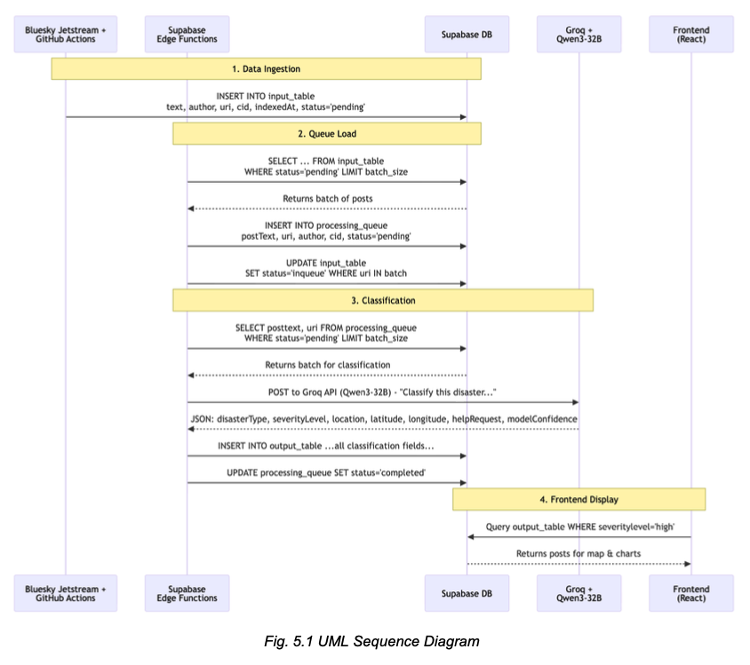
Tools Used
Development & Collaboration
- Project Management: Jira (Agile/Scrum with weekly sprints), GitHub.
- Communication: Weekly team meetings, subteam syncs, faculty advisor check-ins.
Data Science & ML
- Model Testing: Postman with automated collections, custom pre-request scripts.
- LLM Platforms: GroqCloud (primary), Mistral AI (comparative testing).
- Models Evaluated: Qwen series, OpenAI GPT family, Gemini family, DeepSeek, MoonshotAI, Llama, Mistral (16 total).
- Analysis: Python for metrics calculation (accuracy, F1, precision, recall).
Backend & Infrastructure
- Platform: Supabase (PostgreSQL, Edge Functions, REST API, authentication).
- APIs: Groq API, AT Protocol, Jetstream data service.
- Scheduling: GitHub Actions, Supabase cron jobs.
Frontend
- Framework: React.js with Vite.
- Leaflet/Mapbox (maps), Recharts/Shadcn (graphs).
- Styling: Tailwind CSS, Shadcn UI, Lucide Icons.
- Deployment: Vercel.
Tech Stack Summary
- Frontend: React.js, Vite, Leaflet, Shadcn UI, Tailwind CSS
- Backend: Supabase (PostgreSQL, Edge Functions), GroqCloud
- APIs: Bluesky AT Protocol, Jetstream, Groq Inference API
- Infrastructure: Vercel, GitHub Actions
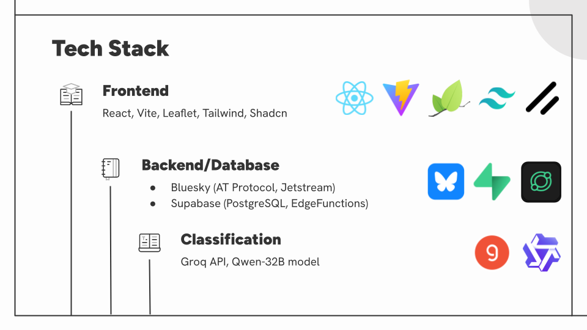
Results
Operational Performance (12-day period)
- 50,000+ Bluesky posts processed
- 10,372 disaster-related events classified (29.3% positive rate)
- 2,900 posts/day average throughput
- 0.917 average model confidence score
- < 1% final failure rate after optimization
Classification Performance
- 94-97% accuracy on validation subsets with optimized prompts
- 12-category disaster taxonomy with balanced severity distribution:
- High severity: 38.5%
- Medium severity: 33.3%
- Low severity: 28.2%
- 75+ distinct geographic locations identified
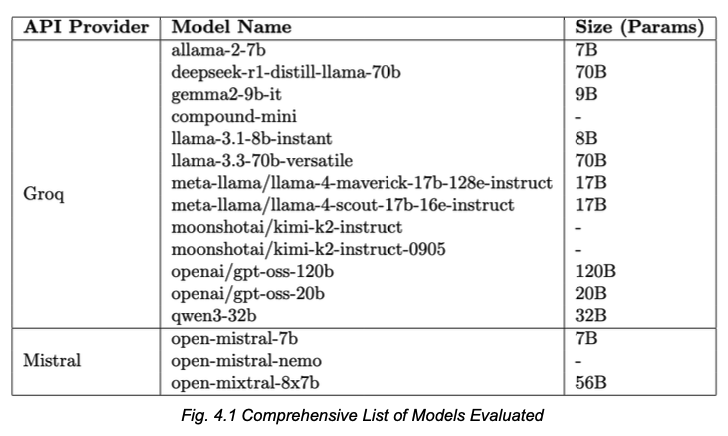
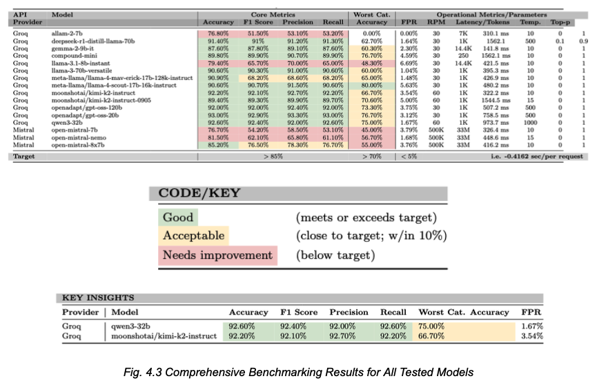
Conclusion
Risk Radar successfully demonstrates that purpose-built AI classification integrated with modern serverless architecture can transform chaotic social media streams into structured, actionable disaster intelligence. The system processes thousands of posts daily with high accuracy, providing emergency responders and the public with near real-time situational awareness through an intuitive geospatial dashboard.
Key achievements include the rigorous model benchmarking process that identified Qwen3-32B as the optimal model through evaluation of 16 alternatives, the development of a resilient pipeline that overcame significant rate limiting challenges, and the creation of a user-centered interface validated through iterative prototyping. The project validates that accessible cloud services and open-source LLMs can deliver enterprise-grade crisis detection capabilities without prohibitive infrastructure costs.
Future work could expand data sources beyond Bluesky, implement fine-tuning for further accuracy improvements, and incorporate image classification for multimodal disaster detection. Risk Radar establishes a strong foundation for automated crisis awareness systems that can save lives through faster, more accessible information during emergencies.
L3 Rocket - Simulation Lead; Spaceport America Cup
Jan-Jun 2024 | UTD AIAA Chapter - Competition Rocketry Team
'24 Rocketry President: Logan Murray | '24 Chief Engineer: Gabe Butuc
Tripoli Mentor: Ken Overton
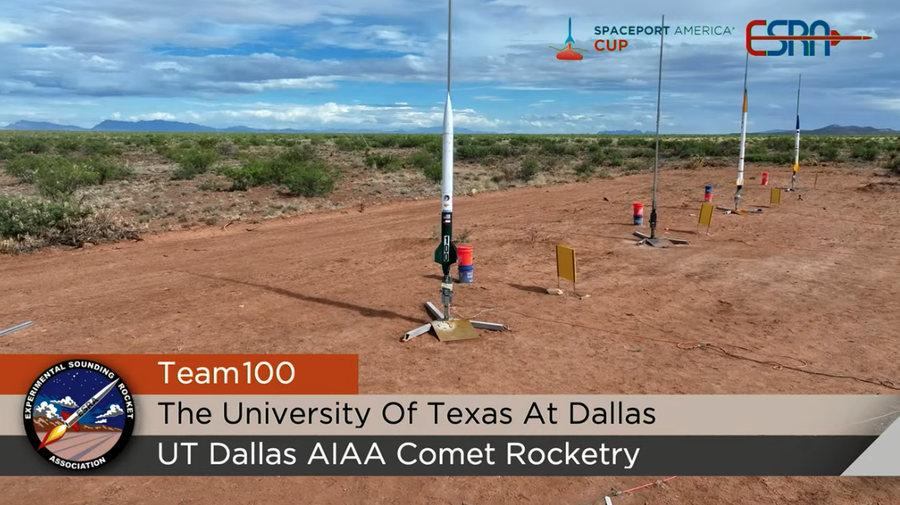
Overview
In the Summer of 2024 our university's American Institute of Aeronautics & Astronautics (AIAA) Competition Rocketry Team competed at the International Rocket Engineering Competition (IREC) at Spaceport America in Sierra County, New Mexico. This competition is the world's largest international rocketry engineering conference, hosted annually by the Experimental Sounding Rocket Association (ESRA), with over 1,700 students and faculty attending from more than 150 institutions globally. After 2 years of preparation, our team finally competed for the first time that summer in the 10K COTS competition, successfully launching and safely recovering our L3 rocket at near-target altitudes, ultimately achieving mission success.
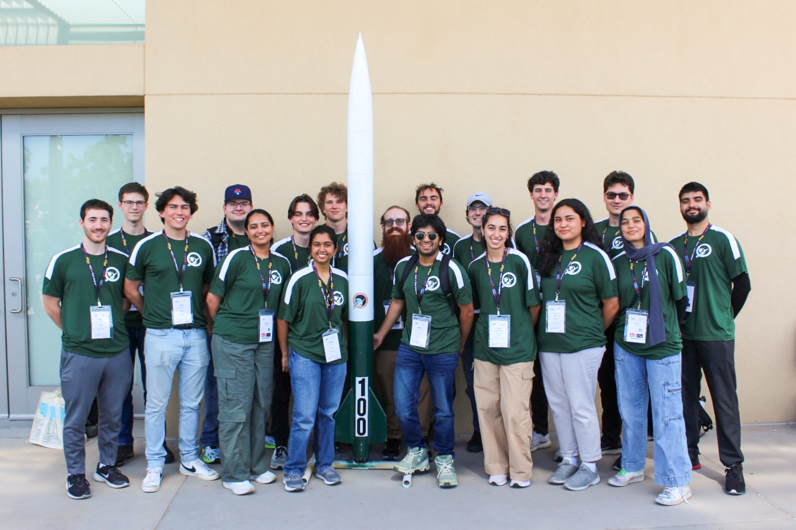
My Role & Responsibilities
As the team's first simulation lead, my primary role was to set a precedent for how the Simulations subteam would operate. I established scope and what tools and frameworks best fit our use-case alongside our chief engineer Gabe Butuc. With no prior documentation to lean on, myself and two other simulations members spent months, researching, testing, collaborating with the other subteams, and discussing with our mentor Ken Overton, the best way to go about the task at hand.
Design Phase
The summer before competition, our team began work on an L2 rocket, named Eclipse, to prepare for the eventual L3 build. This period served as the primary design phase for both rockets, where we established the build approach, selected materials, finalized the bill of materials (BOM), and decided on the technologies to be used throughout the entire process. We test-launched Eclipse a couple of times to understand how the recovery process would work and to practice the full launch workflow before tackling the more complex L3 vehicle.
At the time, we operated with five subteams, which we eventually expanded to six. The Structures subteam was responsible for fabricating the main airframe and nose cone, manufacturing components like bulkheads and centering rings, and handling final assembly and integration. The Avionics subteam managed all internal electronics, including the design and assembly of our student-researched and developed (SRAD) flight computer, as well as parachute deployment timing and e-match circuitry. The Ground Station subteam developed the systems for remote telemetry and real-time data reception during flight. The Payload subteam focused on the experiment carried aboard the rocket, handling everything from battery retention and electronics board layout to coding an MVP for beacon ranging. The Simulations subteam was responsible for modeling our rockets using software like RocketPy, RasAero, and Ansys to predict performance and verify stability. Then we later developed a Propulsion subteam, tasked with designing and building our own rocket motors so that our team could eventually compete in challenge tracks beyond those using commercial-off-the-shelf (COTS) motors.
Throughout this phase, we also had to complete several milestones required for the IREC competition, including initial proposals, technical reports, safety reviews, and regular checkpoint reports to document our progress.
Flight Simulations
We evaluated several different simulation software frameworks, but ultimately chose to use RocketPy due to its easily accessible documentation and active open-source community. We supplemented this with RasAero for cross-verification and OpenRocket for rapid initial design iterations. To keep our work organized and collaborative, we used Google Colab and Git for version control, allowing team members to easily contribute and track changes.
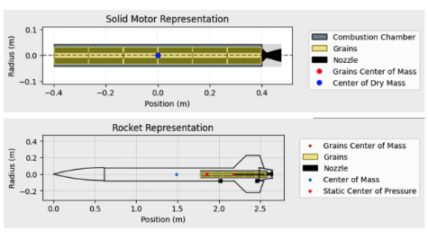
We began by modeling our L2 test rocket, Eclipse (aka: ETR), and comparing the simulation results against our actual test flight data to validate our approach. This process helped us refine our inputs and better understand how each software handled variables like surface finish and atmospheric conditions. It also required extensive research into which motor we would use, involving frequent discussions with the Structures team to ensure compatibility, and ultimately meant we learned how to model and simulate a motor inside and out, as accurate performance data was essential to our simulations. We repeated the same process with an L1 rocket to further cross-reference our methods. This served a dual purpose: it helped bridge the gap for potential future competition team members who were, at the time, participating in our other rocketry program where students learn to build, launch, and certify their own L1 rockets.
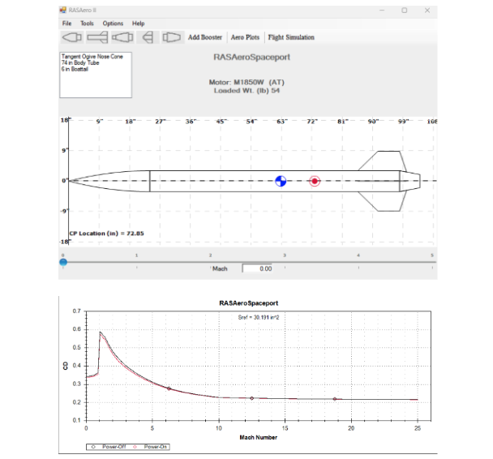
For Eclipse, we ran simulations across all three platforms. OpenRocket predicted an apogee of 5,594 feet, while RocketPy calculated 5,462 feet. The actual flight reached 5,504 feet AGL, putting RocketPy within just 42 feet of the real result. We also used RasAero to study how different surface finish assumptions affected performance. Simulating smooth, painted, and rough painted finishes produced apogee variations ranging from 5,457 feet to 5,462 feet, giving us valuable insight into how real-world manufacturing tolerances might impact our L3 rocket.


Once we were confident in our methods, we moved on to simulating the L3 rocket design, using insights from both RocketPy and RasAero to refine stability margins and predicted apogee. After completing the initial six-degree-of-freedom (6-DOF) simulations for both ETR and our L3 rocket, and waiting for each respective launch day, we began work on recovery simulations. This involved learning to run Monte Carlo analyses and incorporating weather data into our software to better account for real-world variability on launch day. Finding real-world, open-source weather data for our specific launch sites was sometimes challenging, but we were able to pull information from sources like NOAA and the University of Wyoming to feed into our models. Because we had a limited number of test launches, these simulations became especially critical to our preparation. To address this, we ended up developing a local application that could run on our devices and be brought directly to launch sites, allowing us to input the current day-of weather conditions onsite and update our predictions in real time.
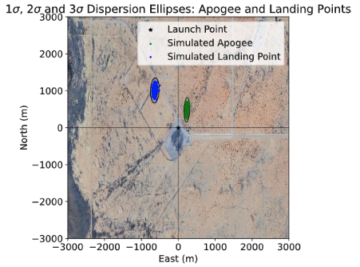
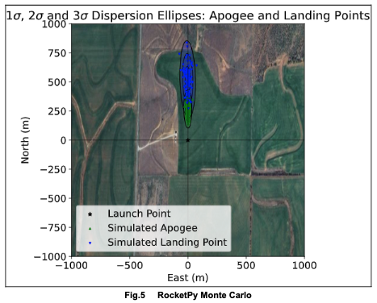
Conclusion
The week of the competition, we drove out to Spaceport America, New Mexico. During competition week, we took the opportunity to meet and
connect with rocketry teams from all over the world (spanning six continents)! It was really interesting getting to see how many different
approaches and innovations teams brought to the field (literally met a team that had a payload you could play Doom on), genuinely learning
so much just from walking the flight line and talking with fellow competitors.
On launch day, after months of preparation, simulation, and hard work, we were able to successfully launch and recover our rocket,
ultimately achieving mission success. It was an incredibly rewarding moment, and I've never been more proud to have gotten to contribute
to and be a part of such an amazing team of bright young engineers. <3
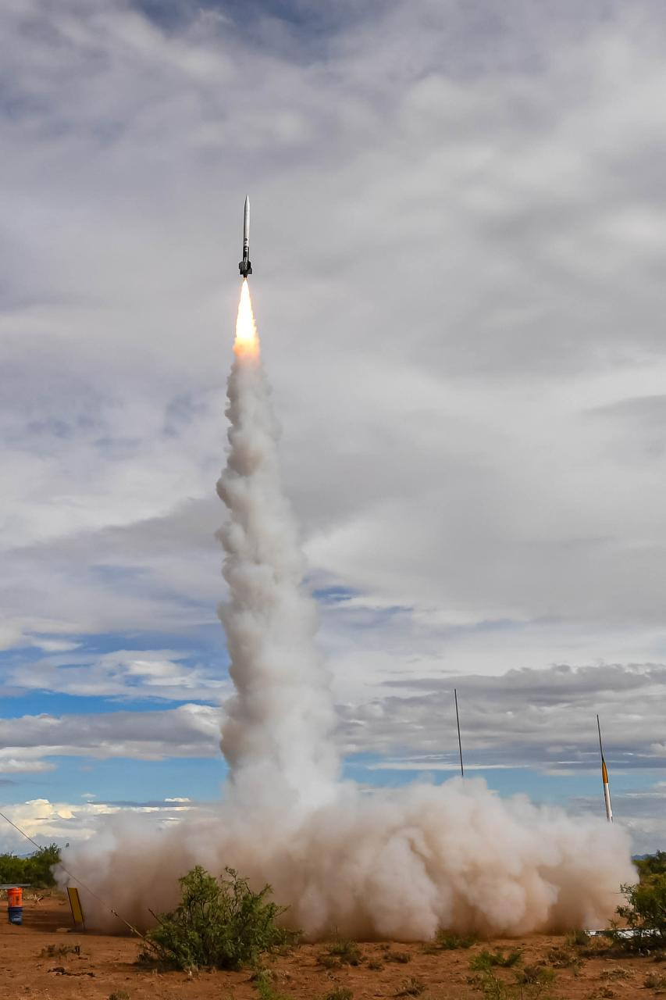
Gallery